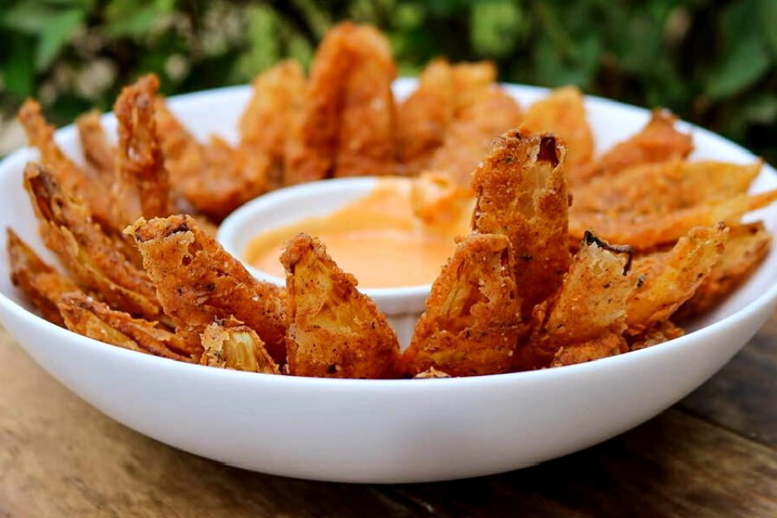

-
Description
On the planet Cacilron, the Olerion desert covers most of the continent it sits on. Cacilrites that live in the desert mostly eat meat as there is very little edible vegitation. The one staple crop in this region is the bloom of the Nacerin Cactus. Which apparently tastes very similar to earthen onions, according to my human chef friend. He also let me know that human's have been making onions "bloom" for a long time.
So to give you a facimile of the Olerion bloom, he has given me a recipe for a "vegan blooming onion" (nothing on Cacilron lays eggs, a strange quirk of that planet's evolution. That, and he know's my feelings about humanities egg dependency.) He even gave me a sauce he said would pair well with it, and I have to agree!
Original recipe on gardengrubblog.com
Ingrediants
Main
- 1 medium-sized sweet onion
- 1 quart vegetable or canola oil
Dry Batter
- 1 cup all-purpose flour
- 1 tbsp smoked paprika
- 1/2 tsp garlic powder
- 1/2 tsp cayenne pepper
- 1/4 tsp ground cumin
- 1/4 tsp dried thyme
- 1/4 tsp dried oregano
- 1/2 tsp kosher salt, plus more for sprinkling on top
- 1/4 tsp black pepper
Wet Batter
- 1/4 cup plain, unsweetened soy milk
- 2 tbsp water
- 2 tbsp liquid Just Egg
- Hot sauce (I personally don't use)
Spicy Aioli
- 1/4 cup vegan mayonnaise
- 1 tbsp ketchup
- 1 tbsp hot sauce
Directions
Dry Batter
- Add all of the ingredients into a wide, shallow bowl and whisk until evenly combined.
Wet Batter
- Add all of the ingredients into a wide, shallow bowl and whisk until evenly combined.
- Preheat the vegetable oil in a medium-sized saucepot to 375 degrees Fahrenheit. Please use a thermometer to get a precise temperature.
- Cut the onion in half through the root. Then, cut the ends off of the onion halves and remove the outer skin.
- Lay the onion down flat, with one of the cut ends facing you, and cut through the top three times, angling the knife towards the center each time to create a petal look. Then, peel the pieces apart so they are individual petals.
- Line a sheet pan with a piece of parchment paper. Line another sheet pan with a couple of layers of paper towel.
- To batter the onions, first, place a few into the dry batter and toss them to coat them lightly. The batter will not stick to the onions a lot this first time. Then, evenly coat them in the wet batter. Lastly, evenly coat them in the dry batter once more. So, it's dry batter-wet batter-dry batter. Then, place them on the sheet pan with the parchment paper.
- To deep fry the battered onions, carefully drop 5 to 6 of them into the oil and cook them for 2 1/2 to 3 minutes, flipping them over halfway through. Then, using a slotted metal spoon, remove the onions and place them on the prepared sheet pan of paper towels.
- Lightly season the fried onions with salt. If desired (I highly recommend this step), drizzle TRUFF's truffle oil over the fried onion petals just before serving. I also like to drizzle a little bit into my spicy aioli!
- Repeat the battering and frying steps with the rest of the onions!
Spicy Aioli
- Add all of the ingredients into a small bowl and stir until well combined.
-
